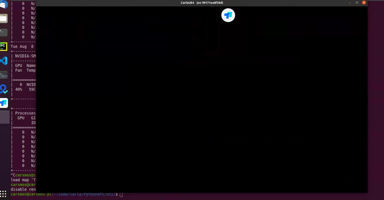
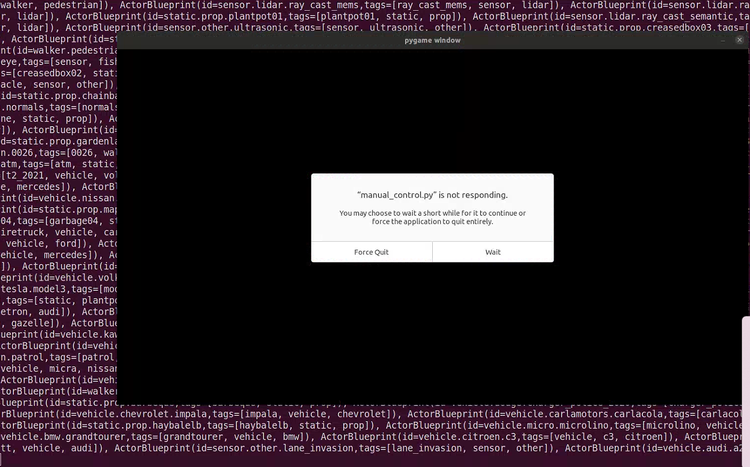

渲染选项
本指南详细介绍了 Carla 中可用的不同渲染选项，包括质量级别、无渲染模式和离屏模式。它还解释了 Carla 0.9.12 版本在这些方面与以前版本的不同之处。
重要
下面的一些命令选项在 Carla 打包版本中并不等效。请阅读命令行选项 部分以了解有关此内容的更多信息。
后台渲染
为了不弹出服务端的界面，可以运行以下命令使Carla在后台运行：
CarlaUE4.exe -RenderOffscreen # Windows
CarlaUE4.sh -RenderOffscreen # Ubuntu
图形质量
Vulkan 图形 API
从版本 0.9.12 开始，Carla 在虚幻引擎 4.26上运行，仅支持 Vulkan 图形API。以前版本的 Carla 可以配置为使用 OpenGL。如果您使用的是 Carla 的早期版本，请在屏幕右下角选择相应的文档版本以获取更多信息。
质量等级
Carla 有两个不同的图形质量级别。Epic 是默认的并且是最详细的。Low 会禁用所有后处理和阴影，并且绘图距离设置为 50m 而不是无限。
模拟在 Low 模式下运行速度明显更快。这在存在技术限制、精度不重要的情况下或者在具有更简单数据或仅涉及接近元素的条件下训练代理的情况下很有帮助。
下图比较了两种模式。Windows 和 Linux 所使用的标志是相同的。使用构建时没有等效选项，但虚幻编辑器有自己的质量设置。访问Settings/Engine Scalability Settings 以获得所需质量的更大定制。
史诗模式
./CarlaUE4.sh -quality-level=Epic
 史诗模式截图
史诗模式截图
低质量模式
./CarlaUE4.sh -quality-level=Low
 低质量模式截图
低质量模式截图
重要
导致史诗模式显示异常白度的问题已得到修复。如果问题仍然存在，请删除 GameUserSettings.ini。它正在保存以前的设置，并将在下次运行时再次生成。 Ubuntu 路径： ~/.config/Epic/CarlaUE4/Saved/Config/LinuxNoEditor/ Windows 路径： <Package folder>\WindowsNoEditor\CarlaUE4\Saved\Config\WindowsNoEditor\
无渲染模式
此模式禁用渲染。虚幻引擎将跳过有关图形的所有内容。此模式可防止渲染开销。它有利于大量交通模拟和非常高频率的道路行为。要启用或禁用无渲染模式，请更改世界设置，或使用/PythonAPI/util/config.py。
以下是如何通过脚本启用和禁用它的示例：
settings = world.get_settings()
settings.no_rendering_mode = True
world.apply_settings(settings)
...
settings.no_rendering_mode = False
world.apply_settings(settings)
cd PythonAPI/util && python3 config.py --no-rendering
cd PythonAPI/util && python3 config.py --rendering
脚本 PythonAPI/examples/no_rendering_mode.py 将启用无渲染模式，服务端窗口会进入黑屏，但是，客户端pygame依然会渲染。并使用简单图形利用 pygame 创建鸟瞰图：
cd PythonAPI/examples && python3 no_rendering_mode.py
-
服务端不渲染，黑屏 
-
客户端，pygame依然会渲染，pygame也需要使用no-render设置

笔记
在无渲染模式下，相机和 GPU 传感器将返回空数据。不使用 GPU。虚幻引擎未绘制任何场景。
离屏模式
从版本 0.9.12 开始，Carla 在虚幻引擎 4.26 上运行，该引擎引入了对离屏渲染的支持。在 Carla 的早期版本中，离屏渲染取决于您使用的图形 API。
离屏与无渲染
了解无渲染模式(no-rendering mode)和离屏模式(off-screen mode)之间的区别很重要：
- 无渲染模式： 虚幻引擎不渲染任何内容。图形不被计算。基于 GPU 的传感器返回空数据。
- 离屏模式： 虚幻引擎正常工作，计算渲染，但没有可用的显示。基于 GPU 的传感器返回数据。
设置离屏模式（版本0.9.12+）
要在离屏模式下启动 Carla，请运行以下命令：
./CarlaUE4.sh -RenderOffScreen
设置离屏模式（0.9.12之前的版本）
如果您使用 OpenGL 或 Vulkan，则使用离屏模式会有所不同。
使用 OpenGL，您可以通过运行以下命令在 Linux 中以离屏模式运行：
# Linux
DISPLAY= ./CarlaUE4.sh -opengl
Vulkan 需要额外的步骤，因为它需要使用 X11 网络协议与显示 X 服务器通信才能正常工作。以下步骤将指导您如何设置没有显示屏的 Ubuntu 18.04 计算机，以便 Carla 可以与 Vulkan 一起运行。
1. 获取最新的 NVIDIA 驱动程序：
wget http://download.nvidia.com/XFree86/Linux-x86_64/450.57/NVIDIA-Linux-x86_64-450.57.run
2. 安装驱动：
sudo /bin/bash NVIDIA-Linux-x86_64-450.57.run --accept-license --no-questions --ui=none
3. 安装 xserver 相关依赖：
sudo apt-get install -y xserver-xorg mesa-utils libvulkan1
4. 配置 xserver：
sudo nvidia-xconfig --preserve-busid -a --virtual=1280x1024
5. 设置 SDL_VIDEODRIVER 变量。
ENV SDL_VIDEODRIVER=x11
6. 运行 xserver：
sudo X :0 &
7. 运行 Carla：
DISPLAY=:0.GPU ./CarlaUE4.sh -vulkan
Carla 在 这里 提供了一个执行上述所有步骤的 Dockerfile 。
空渲染硬件接口
而另一种在 Carla 官方文档中未被提及的方式就是 --nullrhi。在计算机图形学中，RHI（Rendering Hardware Interface）是一种硬件抽象层，用于封装不同图形硬件（GPU）的底层细节，使得图形渲染引擎可以与各种不同类型的硬件协同工作。RHI 负责管理图形资源、执行渲染命令等底层操作，使得开发者可以编写与具体硬件无关的图形渲染代码。
而虚幻引擎中的 --nullrhi 参数则是一种特殊的模式，表示使用 Null Rendering Hardware Interface，即空渲染硬件接口。在这种模式下，Carla 将不会执行实际的图形渲染操作，从而减轻了与图形相关的计算负担。这对于一些特殊的模拟场景，比如需要在后台运行模拟或进行性能测试时，是非常有用的。
使用 --nullrhi 参数，客户端运行 manual_control.py 时 pygame 黑屏。nullrhi 只适用于多 GPU 模式，可以只有一个 GPU 进行渲染，而其他 GPU 使用 nullrhi 不进行渲染。

如有任何问题，您可以在 讨论 中提问。